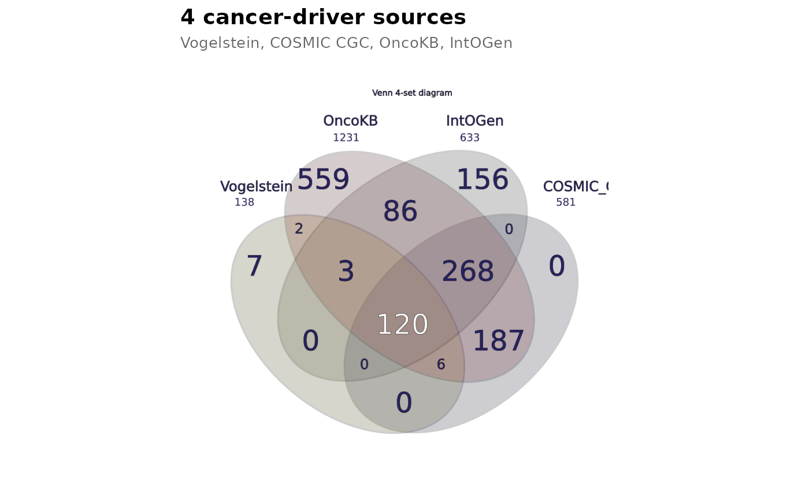

Custom styling and export
Source:vignettes/v08_custom_styling_and_export.Rmd
v08_custom_styling_and_export.RmdCustom styling and export
vennDiagramLab separates analysis from rendering. Once
you have a RegionResult, you can render it with custom
names, custom colors, post-process the SVG, embed it in a ggplot2 chain
via geom_venn(), or export to PNG / PDF.
library(vennDiagramLab)
result <- analyze(load_sample("dataset_real_cancer_drivers_4"))Custom names
Pass a per-letter mapping (A-I) to override
the dataset’s set names:
svg <- render_venn_svg(
result,
set_names = c(A = "Vogelstein\n(2013)",
B = "COSMIC CGC",
C = "OncoKB",
D = "IntOGen"),
title = "Pan-source cancer driver agreement"
)
substr(svg, 1, 60)
#> [1] "<?xml version=\"1.0\" encoding=\"UTF-8\"?>\n<!-- Created by Zolta"Custom colors
Pass a per-letter hex map. Each letter’s color is applied to the matching shape AND the legend bullet (and, where present, the Euler extra shape).
svg <- render_venn_svg(
result,
colors = c(A = "#E69F00", B = "#56B4E9", C = "#009E73", D = "#CC79A7")
)
nchar(svg)
#> [1] 6464Hide the count labels
svg_clean <- render_venn_svg(result, show_counts = FALSE)
nchar(svg_clean)
#> [1] 6425(show_names = FALSE does the analogous thing for set
names.)
Post-render SVG manipulation with xml2
The returned SVG is a plain string; parse it with xml2
to make targeted edits (e.g. set the page background or add a
watermark):
svg <- render_venn_svg(result)
doc <- xml2::read_xml(svg)
xml2::xml_attr(doc, "viewBox")
#> [1] "0 0 700 700"Embed in a ggplot2 chain
geom_venn() returns a list of layers that draws the venn
on a unit-square coordinate system, ready to compose with titles,
themes, and other annotations.
library(ggplot2)
ggplot() +
geom_venn(data = result) +
theme_void() +
labs(title = "4 cancer-driver sources",
subtitle = "Vogelstein, COSMIC CGC, OncoKB, IntOGen") +
theme(plot.title = element_text(size = 14, face = "bold"),
plot.subtitle = element_text(size = 10, colour = "grey40"))
Multi-format export
render_venn_svg() returns a string. Convert it to PNG or
PDF via the rsvg package (already a hard import of
vennDiagramLab):
svg <- render_venn_svg(result)
png_path <- tempfile(fileext = ".png")
rsvg::rsvg_png(charToRaw(svg), png_path, width = 1200)
file.size(png_path)
#> [1] 206202
pdf_path <- tempfile(fileext = ".pdf")
rsvg::rsvg_pdf(charToRaw(svg), pdf_path)
file.size(pdf_path)
#> [1] 31926For a multi-page composite report (venn + upset + statistics +
network + about), use to_pdf_report() — see
vignette("v07_pdf_reports").
What’s next
-
vignette("v01_quickstart")— basic usage. -
vignette("v04_upset_vs_venn_vs_network")— alternative visualizations. -
vignette("v07_pdf_reports")— composite multi-page PDF reports.